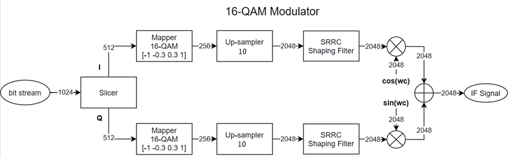
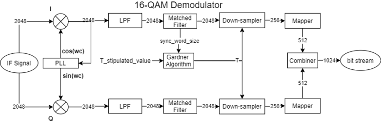

Exemple¶
- This example demonstrates the implementation of a 16-QAM communication system.
The code follows the block diagram bellow:
 {kind=link}
{kind=link}
import qamfunctions.modulation
import qamfunctions.demodulation
import qamfunctions.channel
import qamfunctions as qf
import matplotlib.pyplot as plt
import numpy as np
from math import pi
import scipy.fftpack as sf
plt.close('all')
def QAMsys(SNR, plot=1):
"""16QAM system.
Args:
SNR (float): Signal to Noise Ratio (dB)
plot (int, optional): If it's set to 1 the graphics will be plotted, if it's set to 0 there will be no plots. Default: 1.
output (float): Bit error rate (BER).
"""
# Upsampler Factor
K = 10
# Number of symbols
Ns = 256
# Roll-off factor
alpha = 0.3
# Bits per symbol
Bs = 4
# 16QAM Constellation vector
QAM16 = [-1, -0.333, 0.333, 1]
# Intermediary frequency
Fif = 2e6
# Sampling Rate
Fs = Fif*K/2
# Pseudo-Rand Generator with synchronization bits
data = qf.modulation.data_gen(Ns*Bs)
if plot == 1:
plt.figure(0)
plt.stem(data)
plt.title('Data')
plt.grid()
# Slicer
(dataI, dataQ) = qf.modulation.slicer(data)
# Mapper
mapI = qf.modulation.mapper_16QAM(QAM16, dataI)
mapQ = qf.modulation.mapper_16QAM(QAM16, dataQ)
if plot == 1:
plt.figure(1)
plt.subplot(2, 1, 1)
plt.stem(mapI)
plt.title('Mapper I')
plt.grid()
plt.subplot(2, 1, 2)
plt.stem(mapQ)
plt.title('Mapper Q')
plt.tight_layout()
plt.grid()
plt.figure(2)
plt.scatter(mapI, mapQ)
plt.title('Constelation IQ out mapper')
plt.xlabel('In-Phase')
plt.ylabel('Quadrature')
plt.tight_layout()
plt.grid()
# Up-sampler
upI = qf.modulation.upsampler(Ns, K, mapI)
upQ = qf.modulation.upsampler(Ns, K, mapQ)
if plot == 1:
plt.figure(3)
plt.subplot(2, 1, 1)
plt.stem(upI)
plt.grid()
plt.title('Up-Sampler I')
plt.subplot(2, 1, 2)
plt.stem(upQ)
plt.title('Up-Sampler Q')
plt.tight_layout()
plt.grid()
# Shaping filter
[shape_I, a, b] = qf.modulation.shaping_filter(upI, Ns, alpha, Fif, Fs)
[shape_Q, a, b] = qf.modulation.shaping_filter(upQ, Ns, alpha, Fif, Fs)
template = b
if plot == 1:
plt.figure(4)
plt.plot(a, b)
plt.title('SRRC Filter Impulse Response')
plt.grid()
plt.figure(5)
plt.subplot(3, 1, 1)
plt.plot(shape_I)
plt.title('Raised Cosine Filter Convolution I')
plt.grid()
plt.subplot(3, 1, 2)
plt.plot(shape_Q)
plt.title('Raised Cosine Filter Convolution Q')
plt.grid()
plt.subplot(3, 1, 3)
plt.plot(shape_I, shape_Q)
plt.title('Constalation IQ filter output')
plt.tight_layout()
plt.grid()
# Comparison between the FFT of the Upsampler output and Shaping Filter output.
if plot == 1:
X_f = abs(sf.fft(upI))
l = np.size(upI)
fr = (Fs/2)*np.linspace(0, 1, int(l/2))
xl_m = (2/l)*abs(X_f[0:np.size(fr)])
plt.figure(6)
plt.subplot(2, 1, 1)
plt.plot(fr/1e6, 20*np.log10(xl_m))
plt.title('Upsampler Output Spectrum')
plt.xlabel('Frequency(MHz)')
plt.ylabel('Magnitute(dB)')
plt.grid()
plt.tight_layout()
X_f2 = abs(sf.fft(shape_I))
l2 = np.size(shape_I)
fr2 = (Fs/2)*np.linspace(0, 1, int(l2/2))
xl_m2 = (2/l2)*abs(X_f2[0:np.size(fr2)])
plt.subplot(2, 1, 2)
plt.plot(fr2/1e6, 20*np.log10(xl_m2))
plt.title('Shaping Filter Output Spectrum')
plt.xlabel('Frequency(MHz)')
plt.ylabel('Magnitute(dB)')
plt.grid()
plt.tight_layout()
# Oscillator
delta_phase = np.random.normal(0, pi/3, 1)
delta_freq = np.random.normal(0, 20, 1)
(loCos_TX, t) = qf.modulation.oscillator(0, 4e-4, 2 /
(Fif*K), Fif + delta_freq, delta_phase + pi/2)
(loSin_TX, t) = qf.modulation.oscillator(0, 4e-4, 2 /
(Fif*K), Fif + delta_freq, delta_phase)
if plot == 1:
X_f_1 = abs(sf.fft(loCos_TX))
l_1 = np.size(loCos_TX)
fr_1 = (Fs/2)*np.linspace(0, 1, int(l_1/2))
xl_m_1 = (2/l_1)*abs(X_f_1[0:np.size(fr_1)])
plt.figure(7)
plt.subplot(2, 1, 1)
plt.plot(fr_1/1e6, 20*np.log10(xl_m_1))
plt.title('Spectrum of local oscilator')
plt.xlabel('Frequency(MHz)')
plt.ylabel('Magnitute(dB)')
plt.grid()
plt.subplot(2, 1, 2)
plt.plot(t, loCos_TX)
plt.title('Local Cos')
plt.xlabel('t(s)')
plt.ylabel('Amplitude')
plt.tight_layout()
plt.grid()
# Mixers
mixI = qf.modulation.mixer(shape_I, loCos_TX)
mixQ = qf.modulation.mixer(shape_Q,loSin_TX)
if plot == 1:
plt.figure(8)
plt.subplot(3, 1, 1)
plt.plot(mixI)
plt.title('Mix I')
plt.ylabel('Amplitude')
plt.tight_layout()
plt.grid()
plt.subplot(3, 1, 2)
plt.plot(mixQ)
plt.title('Mix Q')
plt.ylabel('Amplitude')
plt.tight_layout()
plt.grid()
# Combiner
IF = qf.modulation.combiner(mixI, mixQ)
# Noise
IF_n = qf.channel.AWGN(IF, SNR)
if plot == 1:
plt.subplot(3, 1, 3)
plt.plot(IF_n)
plt.title('Mix IQ')
plt.ylabel('Amplitude')
plt.tight_layout()
plt.grid()
X_f1 = abs(sf.fft(IF_n))
l1 = np.size(IF_n)
fr1 = (Fs/2)*np.linspace(0, 1, int(l1/2))
xl_m1 = (2/l1)*abs(X_f1[0:np.size(fr1)])
plt.figure(9)
plt.plot(fr1/1e6, 20*np.log10(xl_m1))
plt.title('IF Spectrum')
plt.xlabel('Frequency(MHz)')
plt.ylabel('Magnitute(dB)')
plt.tight_layout()
plt.grid()
# Synchronization
(loCos_RX, loSin_RX) = qf.demodulation.PLL(IF_n, Fs, len(loCos_TX), K/2)
if plot == 1:
plt.figure(10)
plt.plot(IF_n)
plt.title('Mixed Signal')
plt.xlabel('Samples')
plt.ylabel('Amplitude')
plt.figure(11)
plt.subplot(2, 1, 1)
plt.plot(loCos_RX)
plt.plot(loCos_TX)
plt.title("TX and RX Cos")
plt.subplot(2, 1, 2)
plt.plot(loSin_RX)
plt.plot(loSin_TX)
plt.title("TX and RX Sin")
# Mixer
shape_I_demod = qf.modulation.mixer(IF_n, loCos_RX)
shape_Q_demod = qf.modulation.mixer(IF_n, loSin_RX)
if plot == 1:
plt.figure(12)
plt.subplot(2, 1, 1)
plt.plot(shape_I_demod)
plt.title('Demodulator Mix I')
plt.ylabel('Amplitude')
plt.tight_layout()
plt.grid()
plt.subplot(2, 1, 2)
plt.plot(shape_Q_demod)
plt.title('Demodulator Mix Q')
plt.ylabel('Amplitude')
plt.tight_layout()
plt.grid()
X_f3 = abs(sf.fft(shape_I_demod))
l3 = np.size(shape_I_demod)
fr3 = (Fs/2)*np.linspace(0, 1, int(l3/2))
xl_m3 = (2/l3)*abs(X_f3[0:np.size(fr3)])
plt.figure(13)
plt.plot(fr3/1e6, 20*np.log10(xl_m3))
plt.title('Demodulator Mixer Output')
plt.xlabel('Frequency(MHz)')
plt.ylabel('Magnitute(dB)')
plt.grid()
# Low Pass Filter (Butterworth)
fc = 1e6
[shape_I_demod_filt, W, h] = qf.demodulation.LPF(shape_I_demod, fc, Fs)
[shape_Q_demod_filt, W, h] = qf.demodulation.LPF(shape_Q_demod, fc, Fs)
if plot == 1:
plt.figure(14)
plt.subplot(3, 1, 1)
plt.plot(W, 20*np.log10(h))
plt.title('Filter Freq. Response')
plt.xlabel('Frequency(Hz)')
plt.ylabel('Magnitute(dB)')
plt.grid()
plt.subplot(3, 1, 2)
plt.plot(shape_I_demod_filt)
plt.title('Filtered Signal I')
plt.tight_layout()
plt.ylabel('Amplitude')
plt.grid()
plt.subplot(3, 1, 3)
plt.plot(shape_Q_demod_filt)
plt.title('Filtered Signal Q')
plt.tight_layout()
plt.ylabel('Amplitude')
plt.grid()
# Matched Filter
signal_I = qf.demodulation.matched_filter(shape_I_demod_filt, template)
signal_Q = qf.demodulation.matched_filter(shape_Q_demod_filt, template)
if plot == 1:
plt.figure(15)
plt.subplot(3, 1, 1)
plt.plot(a,template)
plt.title('Template for Matched filter')
plt.tight_layout()
plt.grid()
plt.subplot(3, 1, 2)
plt.plot(signal_I)
plt.title('Signal I')
plt.tight_layout()
plt.grid()
plt.subplot(3, 1, 3)
plt.plot(signal_Q)
plt.title('Signal Q')
plt.tight_layout()
plt.grid()
# Sampling - Gardner Algorithm
symbols_I = qf.demodulation.downsampler(signal_I, len(data), K)
symbols_Q = qf.demodulation.downsampler(signal_Q, len(data), K)
if plot == 1:
plt.figure(16)
plt.subplot(2, 1, 1)
plt.stem(symbols_I)
plt.title('Demodulated Simbols I')
plt.grid()
plt.subplot(2, 1, 2)
plt.stem(symbols_Q)
plt.title('Demodulated Simbols Q')
plt.grid()
plt.tight_layout()
plt.figure(17)
plt.scatter(mapI, mapQ)
plt.title('Constelation TX')
plt.grid()
plt.figure(18)
plt.scatter(symbols_I, symbols_Q)
plt.title('Constelation RX')
plt.grid()
plt.tight_layout()
# Demapper
data_demod = qf.demodulation.demapper(symbols_I, symbols_Q, len(data))
error = 0.0
for i in range(len(data)):
if data_demod[i] != data[i]:
error = error + 1.0
BER = (error*100)/(len(data))
print("\n\n\n")
print("BER:", BER, "%")
print("Phase Offset Through AWGN Channel:", delta_phase/pi, "pi rad")
print("Frequency Offset AWGN Channel:", delta_freq, "Hz")
print("\n\n\n")
return(BER/100)